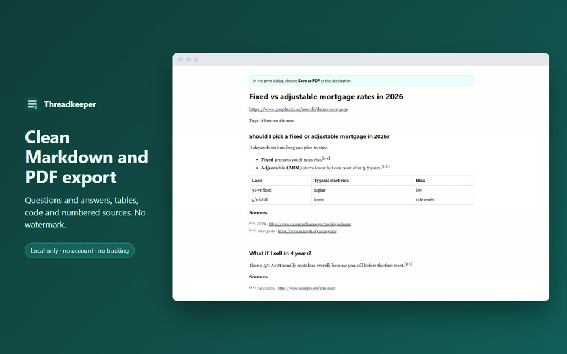

How to export a Perplexity thread to Markdown or PDF
Perplexity can export one answer at a time. If you want a whole thread with every question and answer, or many threads at once, you need a tool. Both ways are below.
Option 1: Perplexity's built-in export (one answer)
- Open the thread on perplexity.ai.
- Under the answer you want, click the Export (share/download) button.
- Pick PDF, Markdown or DOCX.
Perplexity's help center describes this export as saving the answer as PDF, Markdown or DOCX. It works well for a single answer. For a long thread with many follow-up questions, you repeat it for each answer and stitch the files together yourself.
Option 2: export the whole thread with Threadkeeper (free)
- Install Threadkeeper from the Chrome Web Store.
- Open the thread on perplexity.ai. Threadkeeper saves it automatically.
- Click the Threadkeeper button at the bottom right of the page and choose Export Markdown or Export PDF. PDF opens a clean print view: pick Save as PDF.
You get one file with every question as a heading and its answer below, with the sources kept as links.

Exporting many threads at once
With Threadkeeper Pro ($19 once), select any number of saved threads in the library and export them as one ZIP of Markdown files sorted by folder, or as one combined PDF. That is the fastest way to move a research project into Notion, Obsidian or a shared drive.
Add Threadkeeper to Chrome, free
FAQ
Can Perplexity export a full thread?
Perplexity's built-in export saves an answer as PDF, Markdown or DOCX. To get every question and answer of a thread in one file, use an extension such as Threadkeeper.
Does the Markdown keep the sources?
Yes. Threadkeeper keeps each answer's sources as Markdown links.